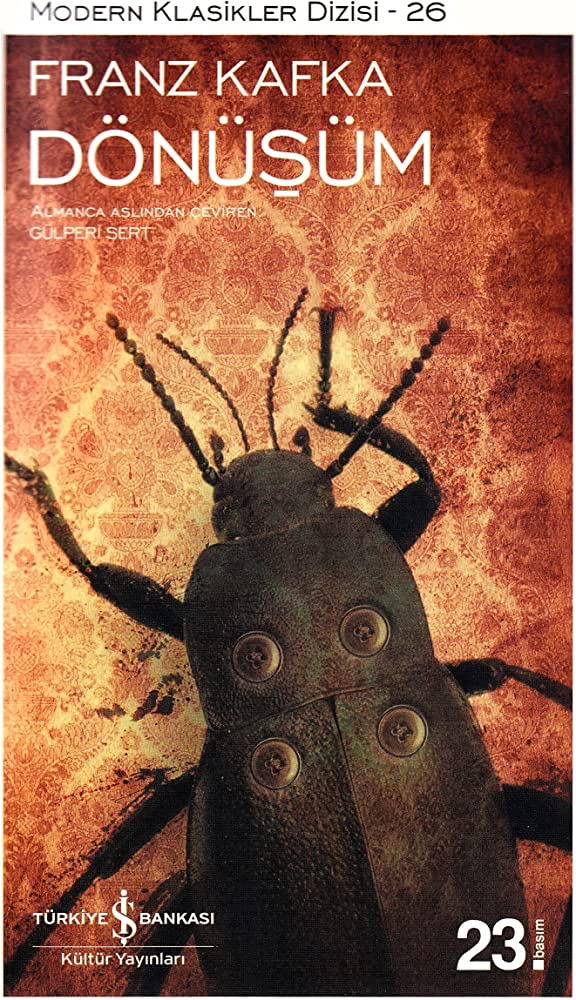

"Dönüşüm", Franz Kafka tarafından 1915 yılında Almanca olarak yazılan bir novelladır. Hikaye, bir sabah kendisini dev bir böceğe dönüşmüş olarak bulan satıcının yaşadıklarını anlatır. Eser, Kafka'nın en ünlü ve etkili çalışmalarından biridir ve modern edebiyatın en önemli eserlerinden biri olarak kabul edilir."Dönüşüm", çağdaş edebiyatın en çok tartışılan ve yorumlanan eserlerinden biridir ve Kafka'nın varoluşçu düşüncesini yansıtır.
